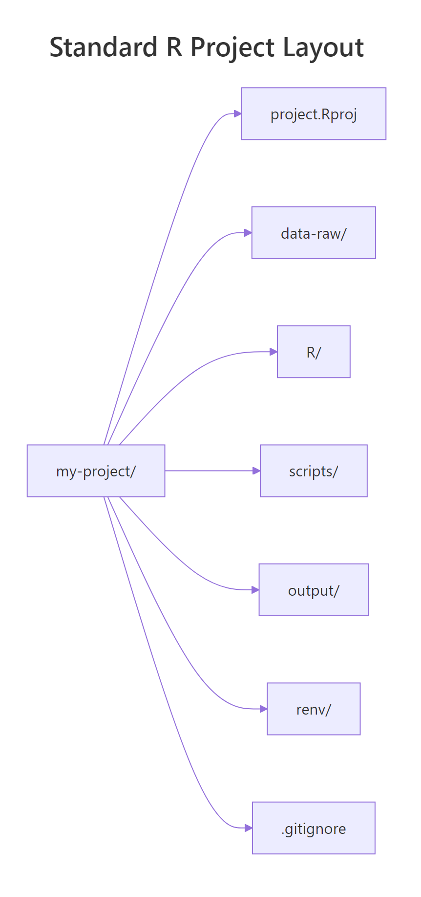
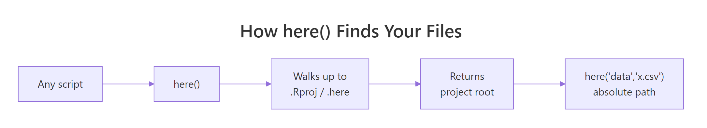

R Project Structure: The Setup That Eliminates setwd() Forever
A well-organised R project uses an RStudio .Rproj file as its anchor, the here package for file paths, and a predictable folder layout — no setwd(), no broken paths when a collaborator opens your code, no "it works on my machine." Get this right once and every future analysis starts on firm ground.
This guide shows the folder layout used by professional R developers, why setwd() is a bug in disguise, how here() replaces it, and how renv locks package versions so reruns actually reproduce.
Why is setwd() considered an anti-pattern in R?
The first line of most R tutorial scripts looks like setwd("C:/Users/selva/project"), and the first thing that line does is guarantee the script won't run on anyone else's machine. The path is hard-coded to one laptop, one operating system, and one user account. Email the script to a colleague and they get Error: cannot change working directory. That's the whole anti-pattern in one sentence.
The fix is not a smarter path — it's to use a project anchor and ask R to resolve paths relative to it. RStudio's .Rproj file is that anchor. Create one, and the working directory is automatically set to the project folder whenever you open the project, with no setwd() line in sight.
here() walks upward from the current file until it finds a project marker (.Rproj, .here, .git, or a few others), then returns that directory. Every path you build with here("subfolder", "file") is absolute and stable no matter where the calling script lives inside the project tree — the second-biggest productivity win in R after the pipe.
setwd() to a shared repository. If your script starts with setwd("C:/Users/selva/..."), it will silently break on anyone else's machine and on CI runners. Use here::here() or fs::path_abs() instead — both resolve against a project anchor that travels with the code.Try it: Assume the project root is ~/demo. Write one call using here::here() that resolves to ~/demo/scripts/plot.R.
Click to reveal solution
Explanation: here() accepts path segments as comma-separated strings, joins them with the correct separator for the OS, and prepends the project root. No leading slash, no .., no platform-specific backslashes.
What does a professional R project folder look like?
There is no single "official" layout, but a few patterns have converged across Hadley Wickham, rOpenSci, and the broader tidyverse community. The skeleton below handles 90% of day-to-day analyses and scales cleanly from a one-off report to a full analysis pipeline.

Figure 1: A minimal-but-complete R project: an .Rproj anchor, separated folders for raw data / scripts / outputs, an renv lockfile for reproducibility, and a .gitignore that keeps secrets out of version control.
| Folder | Contents | Commit? |
|---|---|---|
project.Rproj |
RStudio project file — the anchor | Yes |
data-raw/ |
Immutable raw inputs (CSV, parquet, JSON) | Usually yes (small) / LFS (big) |
data/ |
Cleaned/processed .rds or .parquet ready for analysis | Often gitignored if regeneratable |
R/ |
Reusable functions sourced from scripts | Yes |
scripts/ |
Numbered analysis scripts (01_clean.R, 02_model.R) |
Yes |
output/ |
Plots, tables, rendered reports | Usually gitignored |
reports/ |
Rmd/Quarto docs | Yes |
renv/ |
Package lockfile (via renv::init()) |
Partial (renv.lock yes, renv/library/ no) |
.gitignore |
What to exclude from git | Yes |
README.md |
How to run the project | Yes |
fs::dir_tree() prints a portable directory listing that works on Windows, macOS, and Linux. Once the skeleton exists, running usethis::use_rstudio() in the project root creates the .Rproj file and usethis::use_git() initialises the git repository — two commands that set up everything RStudio and git need to treat this folder as a proper project.
01_import.R → 02_clean.R → 03_model.R → 04_report.R is worth its weight in gold when a colleague opens the project six months later. Even better, wire the whole pipeline through targets so each step only reruns when its inputs change.Try it: Without creating folders, write one call using fs::path_rel() that reports "scripts/01_import.R" when the project root is ~/demo and the absolute path is ~/demo/scripts/01_import.R.
Click to reveal solution
Explanation: path_rel() computes the path of abs_path relative to start. It's the inverse of path_abs() / here() and useful when you need to print or log a project-relative path for readability.
How does the here package replace setwd()?
The here package is a 300-line solution to the single problem setwd() pretended to solve: where are my files? Its one function, here(), walks up from the current working directory looking for a project root marker. The search stops at the first match, and every subsequent path-building call uses that location.

Figure 2: here() walks upward from any file until it hits a marker file (.Rproj, .here, .git, DESCRIPTION, and a few more), then returns that directory. Every here("data", "x.csv") call builds from that anchor.
One call per path, resolved against the project root. read.csv(here("data-raw", "orders.csv")) does the same thing whether you run it from the project root, from inside a reports/ subfolder, or from a Quarto render that silently changes directories. setwd() can't compete with that — it only works when you're lucky enough to be in the right folder at the right time.
If you're in a folder that doesn't contain an .Rproj, drop a sentinel file called .here in the root and here() will latch onto it. That's the official escape hatch for script-only projects that aren't RStudio-managed.
set_here() creates an empty file named .here in the current directory, and from that point forward here() uses it as the anchor. Works in plain R-script projects, inside Docker containers, and anywhere else RStudio isn't around.
here is not the only option. rprojroot is the lower-level package here is built on, and fs::path_abs() works if you pass it a known-absolute root. Most R developers pick here because its single-function API is easier to teach new team members — but the principle (use a project anchor, never setwd()) is what matters, not the specific package.Try it: You have root <- here::here(). Write a one-line call that reads data-raw/products.csv from the project root using here, assuming the file exists.
Click to reveal solution
Explanation: here::here("data-raw", "products.csv") builds the absolute path; wrapping it in read.csv() is the idiomatic read call. The quote() here just lets us display the expression in a WebR-safe way without actually hitting the disk.
How does renv make your project reproducible?
here solves location. renv solves package versions. Without it, re-running your analysis six months later is a coin flip: if any package updated and introduced a breaking change, your old script is broken and you won't always know which package or which version caused it.
renv creates a project-local package library and a lockfile (renv.lock) that records exact versions. When a collaborator clones the repo and runs renv::restore(), they get the same versions you had — including the same version of R, where possible.
The four commands — init, snapshot, restore, status — cover the whole workflow. The renv.lock file is human-readable JSON, which means your code review process can inspect package upgrades the same way you review any other change. Pair renv with a .Rproj and here, and your project is reproducible, portable, and safe to hand to a collaborator.
renv.lock but gitignore renv/library/. The lockfile is the source of truth for which versions to install; the renv/library/ folder is the actual installed copy on your machine and should not be in version control. usethis::use_git_ignore("renv/library/") sets this up in one line.Try it: Name the three renv commands — one to set it up in a fresh project, one to update the lockfile after installing a new package, and one for a collaborator to recreate the environment.
Click to reveal solution
Explanation: init() creates the lockfile and the project library. snapshot() updates the lockfile to match the currently-installed packages. restore() installs exactly what's in the lockfile — the command your collaborator runs after git clone.
What are the biggest R project setup mistakes?
Five patterns cause most "this project worked yesterday" incidents. Each has a one-line fix.
Mistakes 1 and 2 are about paths and naming. Mistake 3 is the one that ends up on Twitter — committing an API key to a public repo is expensive and avoidable. Mistake 4 is reproducibility; mistake 5 is maintainability. All five are the same underlying lesson: make your project boring and predictable so future-you doesn't have to reverse-engineer it.
.Renviron (gitignored) or a secrets manager, read values with Sys.getenv("NAME"), and add .Renviron to your .gitignore on day one. Run usethis::edit_r_environ("project") to create a project-specific one.Try it: You want to read API_KEY from an environment variable, falling back to "unset" if it's missing. Write one line that does this.
Click to reveal solution
Explanation: Sys.getenv() accepts an unset = argument that returns a fallback value when the variable isn't defined. This is the right way to read secrets — the key stays in .Renviron (gitignored), and the code depends on a name, not a value.
Practice Exercises
Two capstone exercises that combine path handling and project structure.
Exercise 1: Build a project-relative read call
Given that your project root contains a data-raw/ folder with a CSV called customers.csv, write an R expression that reads it using here — the expression must work regardless of which subfolder the script is being run from. Capture the expression (not its execution) in my_expr using quote() so we can verify the shape.
Click to reveal solution
Explanation: quote() captures the expression without evaluating it — useful for demonstrations and for meta-programming. In a real script you'd drop the quote() and just run the read.
Exercise 2: Sketch a project skeleton
Write a vector my_dirs listing the five folders a minimal analysis project should have (in any sensible order), and a vector my_files listing the three top-level files every project should contain.
Click to reveal solution
Explanation: data-raw for immutable input, data for cleaned/processed output, R for reusable functions, scripts for numbered pipeline steps, output for artefacts. The three files are your git ignore rules, human-readable onboarding, and the RStudio project anchor.
Complete Example
A complete "day one" setup for a new analysis project, entirely in R. Run these blocks top-to-bottom in a fresh project folder and you'll end up with a clean, reproducible, portable skeleton.
Seven steps, all scripted: folder layout, ignore rules, project file, numbered scripts. The only "real" choices you made were which scripts to include — everything else is mechanical. Commit this as the first commit of every new analysis project and you've saved your future self a dozen small paper cuts.
Summary
| Rule | Why |
|---|---|
Use .Rproj as the project anchor |
Working directory is set correctly every time you open the project |
Use here::here() for paths |
Paths resolve relative to the project root, not the current script |
Separate data-raw/ and data/ |
Raw is immutable; processed is regeneratable and gitignored |
| Number pipeline scripts | Execution order is obvious six months later |
Commit renv.lock |
Packages match across machines and time |
Keep secrets in .Renviron |
Read with Sys.getenv(); never commit a key |
.Rproj anchor, here() paths, and a renv lockfile cover 95% of the reproducibility pain points. The ten minutes you spend setting this up on day one pay back every single day for the lifetime of the project.References
- Wickham, H. and Bryan, J. R Packages (2nd ed.), Chapter 4: Package structure. r-pkgs.org/structure.html
- Bryan, J. Ode to the here package. github.com/jennybc/here_here
- here package documentation. here.r-lib.org
- renv package documentation. rstudio.github.io/renv
- usethis package documentation. usethis.r-lib.org
- rOpenSci Packages Guide, Chapter 1: Package development. devguide.ropensci.org
- Wickham, H. What They Forgot to Teach You About R. rstats.wtf
Continue Learning
- Install R and RStudio 2026 — The parent post: get R and RStudio installed before setting up your first project.
- RStudio IDE Tour — A walkthrough of the four-pane RStudio interface you'll use inside every R project.
- Run Multiple R Versions Side-by-Side — When one project needs R 4.3 and another needs R 4.4,
renvplus a version manager keeps them honest.